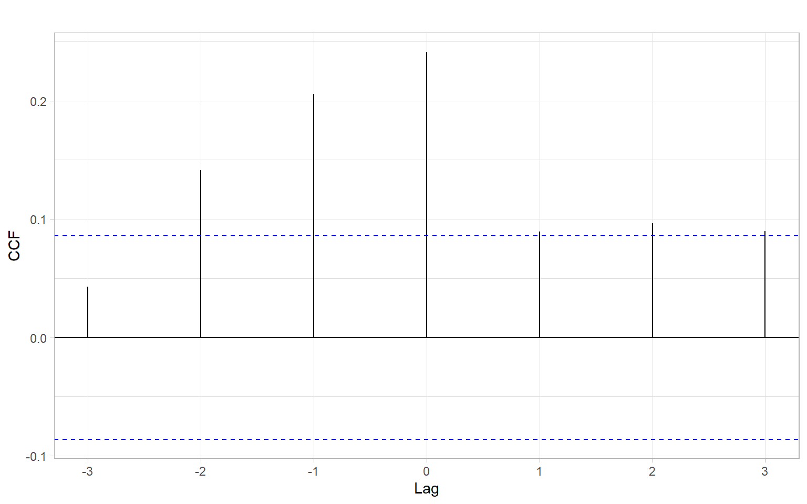
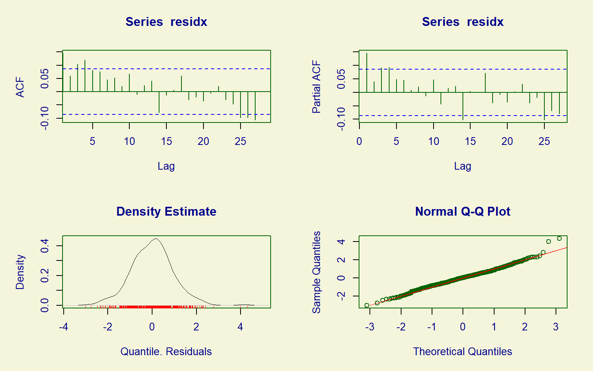
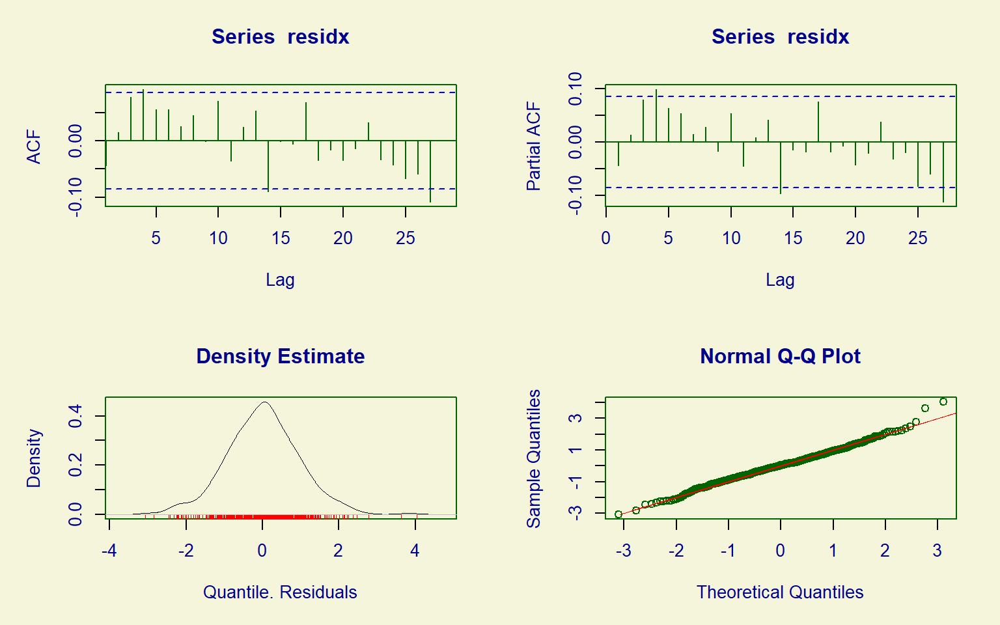
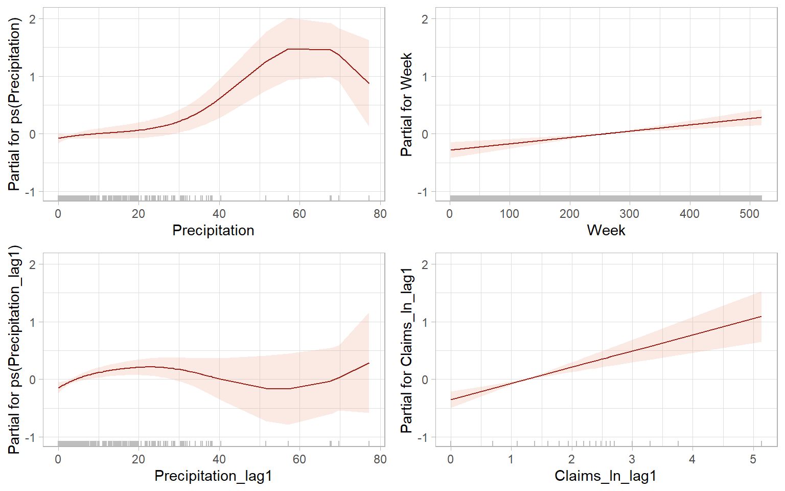

9 Time Series Regression with Correlated Errors
The goal of this lecture is to bring together knowledge about regression, time series trends, and autocorrelation with the goal of obtaining correct inference in regression problems involving time series. You should become capable of suggesting a model that would meet the goal of data analysis (testing certain relationships) while satisfying assumptions (e.g., uncorrelatedness of residuals) and minimizing the risk of spurious results.
Objectives
- Model autocorrelated residuals (in other words, incorporate or account for autocorrelation) so the final residuals satisfy modeling assumptions.
- Apply and interpret Granger causality that is based on time series predictability.
Reading materials
- Chapters 3.8, 5.5, and 5.6 in Shumway and Stoffer (2017)
- Chapter 3 in Kirchgässner and Wolters (2007) on Granger causality
9.1 Introduction
Here we explore a regression model with autocorrelated residuals. We already know how to
- forecast, construct prediction intervals, and test hypotheses about regression coefficients when the residuals satisfy the ordinary least squares (OLS) assumptions, i.e., the residuals are white noise and have a joint normal distribution \(N(0, \sigma^{2})\);
- model serial dependence (i.e., autocorrelation) in stationary univariate time series, such as using ARMA models.
Here we bring these two skills together.
If the residuals do not satisfy the independence assumption, we can sometimes describe them in terms of a specific correlation model involving one or more new parameters and some ‘new residuals.’ These new residuals essentially satisfy the OLS assumptions and can replace the original correlated residuals (which we will sometimes call the ‘old’ residuals) in the model.
When modeling time series, we often want to find so-called leading indicators, i.e., exogenous variables whose lagged values can be used for predicting the response, so we do not need to predict the \(X\)-variables. Hence, our models may include lagged versions of both the response and predictor variables (a general form of such a model was given in Equation 2.2).
9.2 Cross-correlation function
Cross-correlation is a correlation between different time series, typically with a time offset \(k\) (a.k.a. lag): \[ \mathrm{cor}(X_{t+k},Y_t). \tag{9.1}\] (Recall that autocorrelation is also a correlation with a lag present, but for the same time series.) By calculating cross-correlations at each lag \(k = 0, \pm 1, \pm 2, \dots\), we obtain the cross-correlation function (CCF). CCF shows how the correlation coefficient varies with the lag \(k\) and helps us to identify important lags and find leading indicators for predictive models. For example, the relationship between nutrient input and algal blooms in a marine environment is not immediate since the algae need time to reproduce. The correlation between a time series of births and demand for baby formula would be distributed over smaller lags \(l\) \[ \mathrm{cor}(\mathrm{Births}_{t - l}, \mathrm{FormulaDemand}_t) \] than the correlation lags \(L\) between births and school enrollments \[ \mathrm{cor}(\mathrm{Births}_{t - L}, \mathrm{SchoolEnrollment}_t), \] where \(l,L > 0\) and \(l < L\).
The functions ccf() and forecast::ggCcf() estimate the cross-correlation function and plot it as a base-R or a ggplot2 graph, respectively. The functions use the notations like in Equation 9.1, hence when using ccf(x, y) we are typically interested in identifying negative \(k\)s that correspond to correlation between past values of the predictor \(X_t\) and current values of the response \(Y_t\).
For example, Figure 9.1 shows the CCF for two time series of sales that have been detrended by taking differences. From this plot, lagged values of the first series, \(\Delta \mathrm{BJsales{.}lead}_{t - 2}\) and \(\Delta \mathrm{BJsales{.}lead}_{t - 3}\) are significantly correlated with current values of the second series, \(\Delta \mathrm{BJsales}_{t}\). Hence, we can call BJsales{.}lead a leading indicator for BJsales.
Note
The function ccf() assumes that the two time series are evenly spaced and have no missing data. We can use the argument na.action = na.pass to ignore any missing values.
Note that the 95% confidence band shown in Figure 9.1 is based on how i.i.d. series of length \(n\) would correlate (the same way the band is produced for an autocorrelation function with acf()). However, when \(n\) is small, there are not so many pairs \((X_{t+k}, Y_t)\) to calculate the correlations at large lags, hence the confidence bands should be adjusted by using the smaller \(n'(k) = n - |k|\) to account for this lack of confidence.
Another concern is the autocorrelation of individual time series that may lead to spurious cross-correlation (Dean and Dunsmuir 2016). Intuitively, say if \(X_t\) and \(Y_t\) are independent from each other but both \(X_t\) and \(Y_t\) are positively autocorrelated – high (or low) values in \(X_t\) follow each other, and high (or low) values in \(Y_t\) follow each other – there could be a time alignment among our considered lags \(k = 0, \pm 1, \pm 2, \dots\) when the ups (or downs) in \(X_{t+k}\) match those in \(Y_t\). This may result in spurious cross-correlation. To address the concern of autocorrelation, we can apply bootstrapping to approximate the distribution of cross-correlation coefficients corresponding not to the i.i.d. series but to stationary time series with the same autocorrelation structure as the input data. The function funtimes::ccf_boot() implements the sieve bootstrap and returns results for both Pearson and Spearman correlations (Figure 9.2).
Code
set.seed(123)
res <- funtimes::ccf_boot(diff(BJsales.lead), diff(BJsales),
B = 10000, plot = "none")
p1 <- res %>%
ggplot(aes(x = Lag, y = r_P, xend = Lag, yend = 0)) +
geom_ribbon(aes(ymin = lower_P, ymax = upper_P), fill = 4) +
geom_point() +
geom_segment() +
geom_hline(yintercept = 0) +
ylab("Pearson correlation")
p2 <- res %>%
ggplot(aes(x = Lag, y = r_S, xend = Lag, yend = 0)) +
geom_ribbon(aes(ymin = lower_S, ymax = upper_S), fill = 4) +
geom_point() +
geom_segment() +
geom_hline(yintercept = 0) +
ylab("Spearman correlation")
p1 + p2 +
plot_annotation(tag_levels = 'A')funtimes::ccf_boot() automatically produces a base-R plot that was suppressed here to save the results as the object res and use the package ggplot2 for the plots.
Finally, remember that the reported Pearson correlations in Figure 9.1 and Figure 9.2 A measure the direction and strength of linear relationships, while Spearman correlations in Figure 9.2 B correspond to monotonic relationships. To further investigate whether the lagged relationships are linear, monotonic, or of some other form, we need to plot the lagged scatterplots (Figure 9.3). Also see other functions in the package astsa, such as the function astsa::lag1.plot() for exploring nonlinear autocorrelations.
9.3 Linear regression with ARMA errors
We begin with the simplest case, a constant mean model, where the residuals are serially correlated and follow an AR(1) model, that is \[ Y_{t} = \beta_{0} + \epsilon_{t}, \tag{9.2}\] where \(\epsilon_{t} \sim\) AR(1), i.e., \[ \epsilon_{t} = \phi \epsilon_{t - 1} + a_{t}. \tag{9.3}\]
Here \(\phi\) is a real number satisfying \(0 < |\phi| < 1\); \(a_{t}\) is white noise with zero mean and the variance \(\nu^{2}\), i.e., \(a_{t} \sim \mathrm{WN}(0,\nu^2)\). We also assume that \(\mathrm{cov}(a_{t}, \epsilon_{s}) = 0\) for all \(s < t\) (i.e., that the residuals \(\epsilon_s\) are not correlated with the future white noise \(a_t\)).
Equation 9.3 allows us to express Equation 9.2 as \[ Y_{t} = \beta_{0} + \phi \epsilon_{t - 1} + a_{t}. \tag{9.4}\]
The advantage of this representation is that the new residuals \(a_{t}\) satisfy the OLS assumptions. In particular, since \(a_{t}\) is white noise, \(a_{t}\) is homoskedastic and uncorrelated.
We shall also assume that \(a_{t}\) are normally distributed (for justification of the construction of confidence intervals and prediction intervals). However, even if \(a_{t}\) are not normal, \(a_{t}\) are uncorrelated, which is a big improvement over the serially correlated \(\epsilon_{t}\).
Our goal is to remove the \(\epsilon_{t}\) entirely from the constant mean model and replace them with \(a_{t}\) acting as new residuals. This can be done as follows. First, write Equation 9.2 for \(t-1\) and multiply both sides by \(\phi\), \[ \phi Y_{t -1} = \phi \beta_{0} + \phi \epsilon_{t - 1}. \tag{9.5}\]
Taking the difference (Equation 9.4 minus Equation 9.5) eliminates \(\epsilon_{t}\) from the model: \[ \begin{split} Y_{t} - \phi Y_{t - 1} &= \left( \beta_{0} + \phi \epsilon_{t - 1} + a_{t} \right) - \left( \phi \beta_{0} + \phi \epsilon_{t - 1} \right) \\ &= (1 - \phi) \beta_{0} + a_{t}. \end{split} \]
Therefore we can rewrite the constant mean model in Equation 9.2 as \[ Y_{t} = (1 - \phi) \beta_{0} + \phi Y_{t - 1} + a_{t}. \tag{9.6}\]
In general, for any multiple linear regression \[ Y_{t} = \beta_{0} + \sum^{k}_{j =1} \beta_{j} X_{t,j} + \epsilon_{t}, ~~ \text{where} ~~ \epsilon_{t} \sim \mbox{AR(1)}, \tag{9.7}\] we can perform a similar procedure of eliminating \(\epsilon_{t}\).
This elimination procedure leads to the alternate expression \[ Y_{t} = (1 - \phi) \beta_{0} + \phi Y_{t -1} + \sum^{k}_{j = 1} \beta_{j} (X_{t,j} - \phi X_{t-1, j}) + a_{t}, \tag{9.8}\] where \(a_{t}\) is white noise, i.e., homoskedastic with constant (zero) mean and uncorrelated. See Appendix B describing the method of generalized least squares and an example of \(k=1\).
Note that rewriting the model in this way pulls the autocorrelation parameter for the old residuals, \(\phi\), into the regression part of the model. Thus there are now \(k + 2\) unknown regression parameters (\(\beta_{0}, \beta_{1}, \dots, \beta_{k}\), and \(\phi\)). The introduction of an additional parameter into the regression part of the model can be regarded as the price to be paid for extracting new residuals \(a_{t}\) that satisfy the OLS assumptions.
Note that the new residuals \(a_{t}\) have smaller variance than the \(\epsilon_{t}\). In fact, \[ \begin{split} \sigma^{2} & = \mbox{var} (\epsilon_{t} ) = \mbox{var} (\phi \epsilon_{t - 1} + a_{t}) \\ \\ & = \phi^{2} \mbox{var}(\epsilon_{t - 1}) + \mbox{var} (a_{t} ) ~~~ \mbox{since} ~~ \mbox{cov}(a_{t}, \epsilon_{t - 1}) = 0\\ \\ & = \phi^{2}\sigma^{2} + \nu^{2}, \end{split} \] leading to the relation \[ \nu^{2} = \sigma^{2} (1 - \phi^{2} ). \tag{9.9}\]
However, comparing Equation 9.6 with Equation 9.6, and Equation 9.8 with Equation 9.7, we see that the rewritten form of the model is not linear in terms of the parameters \(\beta_{0}, \beta_{1}, \dots, \beta_{k}\) and \(\phi\). For example, the intercept term \((1 - \phi) \beta_{0}\) involves a product of two of the parameters. This nonlinearity makes the OLS, implemented in the R functions lm() and lsfit(), a poor method for obtaining parameter estimates. Instead, we will use the method of maximum likelihood (ML) carried out through such R functions as arima().
The function arima() allows us to input the model in its original form, as in Equation 9.7. It then internally rewrites the model to put it in the form of Equation 9.8. (So we do not have to rewrite the model!) It then makes the assumption that the \(a_t\) are normal and constructs the multivariate normal likelihood function \[
L (Y_{1} , \dots , Y_{n}; Q ),
\] where \(n\) is the sample size and \(Q\) is the vector of all unknown parameters. In general, for an AR(1) model with \(k\) original predictors, we have \(Q = (\phi, \beta_{0}, \beta_{1}, \dots, \beta_{k}, \nu^{2})\). Recall that \(\nu^{2} = \mathrm{var}(a_{t}) = \mathrm{cov}(a_{t} , a_{t})\).
The function arima() then uses the historical data \(Y_{1}, \dots, Y_{n}\) to find the parameter estimates \[
\hat{Q} = \left( \hat{\phi}, \hat{\beta}_{0} , \hat{\beta}_{1} , \dots, \hat{\beta}_{k} , \hat{\nu}^2 \right),
\] which maximize the likelihood \(L\). These estimates (and other things, such as the standard errors of the estimates) can be saved to an output object in R. We will use an example to illustrate the use and interpretation of the function arima().
Moreover, we can extend the regression model in Equation 9.7 with AR(1) errors to a model with a more general form of errors, ARMA, by assuming \(\epsilon_t \sim \text{ARMA}(p,q)\) (see Chapter 6.6 in Brockwell and Davis 2002 and https://robjhyndman.com/hyndsight/arimax/): \[
\begin{split}
Y_t &= \sum^{k}_{j =1} \beta_{j} X_{t,j} + \epsilon_{t},\\
\epsilon_{t} &= \phi_1 \epsilon_{t-1} + \dots + \phi_p \epsilon_{t-p} + \theta_1 a_{t-1} + \dots + \theta_q a_{t-q} + a_t.
\end{split}
\tag{9.10}\] This model in Equation 9.10 can be specified in R functions arima(), fable::ARIMA(), forecast::Arima(), and forecast::auto.arima().
Note
The R package forecast has been superseded by the new package fable that uses an alternate parameterization of constants, see ?fable::ARIMA.
Note
Remember that the variables \(Y_t\) and \(X_{t,j}\) (\(j = 1,\dots,k\)) should be detrended prior to the analysis (to avoid spurious regression results, see the previous lecture on dealing with trends in regression). If differencing is chosen as the method of detrending, the orders of differences \(d\) and \(D\) can be specified directly within the mentioned ARIMA functions (so R will do the differencing for us).
9.4 ARIMAX
ARIMAX (‘X’ stands for ‘external regressor’) models are closely related to Equation 9.10, but there is an important difference. For simplicity of notation, we can present an ARMAX(\(p,q\)) model that is a regular ARMA(\(p,q\)) model for \(Y_t\) plus the external regressors: \[
\begin{split}
Y_t &= \phi_1 Y_{t-1} + \dots + \phi_p Y_{t-p} + \theta_1 a_{t-1} + \dots + \theta_q a_{t-q} + a_t\\
&+\sum^{k}_{j =1} \beta_{j} X_{t,j},
\end{split}
\tag{9.11}\] where \(a_t\) is still a zero-mean white noise process. Interestingly, at this time there is no convenient way to estimate this model in R. One could manually write lagged values of \(Y_t\) as external regressors (i.e., create new variables in R for \(Y_{t-1},\dots, Y_{t-p}\)), use these variables in the R functions mentioned above, but force \(p=0\) (e.g., Soliman et al. 2019 used the functions from the R package forecast).
The difference between Equation 9.10 and Equation 9.11 is the presence of lagged values of the response variable, \(Y_t\), in Equation 9.11. As Hyndman points out, regression coefficients \(\beta_j\) in Equation 9.11 lose their interpretability compared with usual regression and do not show the effect on \(Y_t\) when \(X_t\) increased by one. Instead, \(\beta\)’s in ARMAX Equation 9.11 are interpreted conditional on the value of previous values of the response variable (https://robjhyndman.com/hyndsight/arimax/). Therefore, model formulation as in Equation 9.10 may be preferred.
Note
Other applicable models include models with mixed effects such as for repeated measures ANOVA (e.g., implemented in R using nlme::gls() and nlme::lme(), see different correlation structures; without a grouping factor, the results of nlme::lme(..., correlation = corARMA(...)) should be similar to estimating model in Equation 9.10). Other regression functions often borrow the functionality (and syntax) of the package nlme for estimating random effects, so autocorrelated residuals can be incorporated into a generalized additive model, GAM, mgcv::gamm(); generalized additive model for location scale and shape, GAMLSS, gamlss::gamlss(), which also can be used just as GAM, if scale and shape parameters are not modeled. A slightly different solution is possible using a generalized autoregressive moving average model (GARMA) demonstrated in Appendix D, see gamlss.util::garmaFit().
NoteExample: Golden tilefish and AMO
Here we revisit time series of 1918–2017 annual landings of golden tilefish in the U.S. North Atlantic region and the Atlantic Multi-decadal Oscillation (AMO) index characterizing climatic conditions (Figure 9.4). These time series were described in Nesslage et al. (2021) with R code by Lyubchich and Nesslage (2020). The goal is to develop a regression model to explore the relationship between the landings and AMO.
#> Year Landings AMO
#> Min. :1918 Min. : 5 Min. :-0.43383
#> 1st Qu.:1943 1st Qu.: 454 1st Qu.:-0.14821
#> Median :1968 Median : 749 Median : 0.01392
#> Mean :1968 Mean : 952 Mean : 0.00147
#> 3rd Qu.:1992 3rd Qu.:1204 3rd Qu.: 0.14944
#> Max. :2017 Max. :3968 Max. : 0.35817
#> NA's :3Code
p1 <- ggplot(D, aes(x = Year, y = Landings)) +
geom_line() +
xlab("Year") +
ylab("Landings (tonne)")
p2 <- ggplot(D, aes(x = Year, y = AMO)) +
geom_line() +
xlab("Year") +
ylab("AMO")
p1 + p2 +
plot_annotation(tag_levels = 'A')Interpolation of missing data (a.k.a. imputation) is a separate and very expansive topic. For a univariate time series, linear interpolation can be implemented using forecast::na.interp(). Also, the landings time series required a power transformation, so the square root transformation was applied (Figure 9.5).
Code
D <- D %>%
mutate(Landings_noNA = as.numeric(forecast::na.interp(D$Landings))) %>%
mutate(Landings_noNA_sqrt = sqrt(Landings_noNA))
D %>%
dplyr::select(AMO, Landings_noNA_sqrt) %>%
GGally::ggpairs()
Code
forecast::ggCcf(D$AMO, D$Landings_noNA_sqrt) +
ggtitle("")
Based on the strongest lagged correlations (Figure 9.6), implement a model \[ \sqrt{Landings_t} = \beta_0 + \beta_{1} AMO_{t-7} + \epsilon_{t}, \] where \(\epsilon_{t} \sim\) ARMA(\(p,q\)), and the orders \(p\) and \(q\) are selected automatically based on Akaike information criterion.
Code
#> Series: Landings_noNA_sqrt
#> Model: LM w/ ARIMA(2,0,0) errors
#>
#> Coefficients:
#> ar1 ar2 dplyr::lag(AMO, 7) intercept
#> 0.991 -0.184 -6.30 28.3
#> s.e. 0.104 0.102 5.02 3.4
#>
#> sigma^2 estimated as 41.61: log likelihood=-307
#> AIC=625 AICc=626 BIC=638We forgot to check the stationarity of the time series! It seems that the landings can be considered as a unit-root process, so differencing is needed, hence a modified model is
\[ \Delta \sqrt{Landings_t} = \beta_0 + \beta_{1} AMO_{t-7} + \epsilon_{t}. \]
Code
m2 <- forecast::auto.arima(diff(D$Landings_noNA_sqrt),
xreg = dplyr::lag(D$AMO, 7)[-1],
allowmean = TRUE)
m2#> Series: diff(D$Landings_noNA_sqrt)
#> Regression with ARIMA(0,0,0) errors
#>
#> Coefficients:
#> xreg
#> -2.58
#> s.e. 3.82
#>
#> sigma^2 = 46.3: log likelihood = -313
#> AIC=629 AICc=630 BIC=634Note it is different from the implementation with d = 1, which differences all the series.
\[ \Delta \sqrt{Landings_t} = \beta_0 + \beta_{1} \Delta AMO_{t-7} + \epsilon_{t} \]
Code
forecast::auto.arima(D$Landings_noNA_sqrt,
xreg = dplyr::lag(D$AMO, 7),
d = 1)#> Series: D$Landings_noNA_sqrt
#> Regression with ARIMA(0,1,0) errors
#>
#> Coefficients:
#> xreg
#> -5.37
#> s.e. 5.14
#>
#> sigma^2 = 45.7: log likelihood = -309
#> AIC=623 AICc=623 BIC=628Similarly, using the newer package fable.
Code
#> Series: Landings_noNA_sqrt
#> Model: LM w/ ARIMA(0,1,0) errors
#>
#> Coefficients:
#> dplyr::lag(AMO, 7)
#> -5.37
#> s.e. 5.14
#>
#> sigma^2 estimated as 45.73: log likelihood=-309
#> AIC=623 AICc=623 BIC=6289.5 GAMLSS
Stasinopoulos and Rigby (2007) provide an extension of a generalized additive model to \(k=1,2,3,4\) parameters \(\boldsymbol{\theta}_k\) of a distribution in a so-called generalized additive model for location scale and shape (GAMLSS). The \(k\) parameters represent the location parameter \(\mu\) (it is what we typically model with regression models), scale \(\sigma\), and two shape parameters: skewness and kurtosis. The model can be further generalized for \(k>4\) if needed. It allows us to fit \(k\) individual models to study relationships between regressors \(\boldsymbol{x}\) and parameters of the response distribution: \[ g_k(\boldsymbol{\theta}_k) = h_k\left(\boldsymbol{X}_k,\boldsymbol{\beta}_k\right) + \sum_{j=1}^{J_k}h_{jk}(\boldsymbol{x}_{jk}), \tag{9.12}\] where \(k=1\) produces model for the mean; \(h_k(\cdot)\) and \(h_{jk}(\cdot)\) are nonlinear functions; \(\boldsymbol{\beta}_k\) is a parameter vector of length \(J_k\); \(\boldsymbol{X}_k\) is an \(n\times J_k\) design matrix; \(\boldsymbol{x}_{jk}\) are vectors of length \(n\). The terms in the GAMLSS provide a flexible framework to specify nonlinearities, random effects, and correlation structure as in the mixed effects models (Zuur et al. 2009); see Table 3 by Stasinopoulos and Rigby (2007) for the possible specifications of the additive terms. Hence, a model as in Equation 9.12 may accommodate non-normal distributions, possibly nonlinear relationships, and spatiotemporal dependencies in the data.
NoteExample: Insurance claims GAMLSS
Consider the weekly number of home insurance claims related to water and weather damage in one Canadian city. The number is standardized by the daily number of insured properties in that city. The date of the claim corresponds to reported date of water weather damage, not the date when the claim was filed. This allows us to explore the relationship between the number of claims and weekly total precipitation (mm).
Code
#> Claims Precipitation
#> Min. : 0.00 Min. : 0.000
#> 1st Qu.: 1.00 1st Qu.: 0.775
#> Median : 3.00 Median : 3.800
#> Mean : 3.61 Mean : 7.713
#> 3rd Qu.: 4.00 3rd Qu.:10.000
#> Max. :170.00 Max. :77.300Based on the distribution plots in Figure 9.7, the data are highly right-skewed (the distributions have heavy right tails). The number of claims is also a discrete variable. Therefore, we deal with non-normal distributions and need to use generalized-type models, like the generalized linear or additive models (GLMs or GAMs). Since the claim counts contain many zeros and exhibit overdispersion, we might need to use the zero-adjusted Poisson distribution or negative binomial distribution for this response variable (Gupta et al. 1996; Stasinopoulos and Rigby 2007).
In our case, there is just a slight chance that past-week precipitation affects the current-week insurance claims. Hence, we will keep the current precipitation and additionally explore the lagged effects, using the cross-correlation function (Figure 9.8).
Code

Based on the estimated CCFs (Figure 9.8), past-week precipitation is significantly correlated with the current-week number of claims, so we can add the lagged predictor into our models.
Insurance <- Insurance %>%
mutate(Precipitation_lag1 = dplyr::lag(Precipitation, 1),
Week = 1:nrow(Insurance),
Year = rep(2002:2011, each = 52),
Claims_ln = log(Claims + logconstant)) %>%
mutate(Claims_ln_lag1 = dplyr::lag(Claims_ln, 1))
# The model function doesn't accept NAs, so remove them
Insurance_noNA <- na.omit(Insurance)Based on Figure 9.9, there might be an increasing trend in the number of claims that we can approximate with a linear function.
Code

Plot the data once again after the transformations (Figure 9.10).

Negative binomial distribution has two parameters (see ?NBI) – location and scale – so the GAMLSS using this distribution family can include up to two equations (\(k = 1, 2\) in Equation 9.12). See ?gamlss.family and gamlss::chooseDist() for other distribution families, continuous and discrete; somewhat out-of-date tables with many of these distributions listed are available from Stasinopoulos and Rigby (2007).
We will model a linear relationship between claims and the week number (parametric linear trend; note that the variable Week here is the time index, not the week of the year) but will use nonparametric additive smooths for the relationships between number of claims and precipitation amounts.
We will model the scale (variability) of the number of claims using a smooth term of the week number.
We start by fitting a model as follows: \[ \begin{split} Claims_t &= NegBin(\mu_t, \sigma_t) \\ \ln(\mu_t) &= a_0 + a_1 Week_t + f_1(Precipitation_t) + f_2(Precipitation_{t-1}) + \epsilon_t \\ \ln(\sigma_t) &= b_0 + f_3(Week) \\ \end{split} \tag{9.13}\] where \(\epsilon_t \sim \mathrm{WN}(0,\sigma^2)\); \(a_0\), \(a_1\), and \(b_0\) are parametric coefficients; \(f_1\), \(f_2\), and \(f_3\) are nonparametric smooths.
In its expandable collection of smoothers, the R package gamlss features penalized B-splines. See the help files ?gamlss and ?pb for more details and the review of spline functions in R by Perperoglou et al. (2019). However, here we used the original P-splines ps() because they provided more visually smooth results than pb() under the default settings. The control arguments change the default settings to speed up the algorithm convergence.
Based on the observed ACF and PACF patterns in Figure 9.11, an appropriate model for the temporal dependence could be ARMA(1,0), ARMA(0,3), or ARMA(1,1). Since the package gamlss does not have built-in functionality to specify correlation structures in the residuals, we will include the lagged claims as a predictor in the model.
Code
plot(m00_gamlss, ts = TRUE)#> ******************************************************************
#> Summary of the Randomised Quantile Residuals
#> mean = 0.0101
#> variance = 0.919
#> coef. of skewness = 0.215
#> coef. of kurtosis = 4.16
#> Filliben correlation coefficient = 0.994
#> ******************************************************************

Residual diagnostics of the resulting GAMLSS look satisfactory (Figure 9.12), with most of the correlations disappeared, and the residuals being approximately normally distributed. See Dunn and Smyth (1996) for the details on randomized quantile residuals.
Code
plot(m10_gamlss, ts = TRUE)#> ******************************************************************
#> Summary of the Randomised Quantile Residuals
#> mean = 0.0167
#> variance = 0.932
#> coef. of skewness = 0.129
#> coef. of kurtosis = 3.83
#> Filliben correlation coefficient = 0.996
#> ******************************************************************

See the model summary below. Note it has a table for each parameter of the distribution.
summary(m10_gamlss)#> ******************************************************************
#> Family: c("NBI", "Negative Binomial type I")
#>
#> Call: gamlss(formula = Claims ~ ps(Precipitation) + Week +
#> ps(Precipitation_lag1) + Claims_ln_lag1, sigma.formula = ~ps(Week),
#> family = NBI, data = Insurance_noNA, control = gamlss.control(c.crit = 0.01,
#> trace = FALSE))
#>
#> Fitting method: RS()
#>
#> ------------------------------------------------------------------
#> Mu link function: log
#> Mu Coefficients:
#> Estimate Std. Error t value Pr(>|t|)
#> (Intercept) 0.341242 0.099084 3.44 0.00062 ***
#> ps(Precipitation) 0.013650 0.002602 5.25 2.3e-07 ***
#> Week 0.001096 0.000274 3.99 7.4e-05 ***
#> ps(Precipitation_lag1) 0.007413 0.002953 2.51 0.01239 *
#> Claims_ln_lag1 0.280665 0.056151 5.00 8.0e-07 ***
#> ---
#> Signif. codes: 0 '***' 0.001 '**' 0.01 '*' 0.05 '.' 0.1 ' ' 1
#>
#> ------------------------------------------------------------------
#> Sigma link function: log
#> Sigma Coefficients:
#> Estimate Std. Error t value Pr(>|t|)
#> (Intercept) -0.307970 0.227831 -1.35 0.1771
#> ps(Week) -0.003157 0.000806 -3.92 0.0001 ***
#> ---
#> Signif. codes: 0 '***' 0.001 '**' 0.01 '*' 0.05 '.' 0.1 ' ' 1
#>
#> ------------------------------------------------------------------
#> NOTE: Additive smoothing terms exist in the formulas:
#> i) Std. Error for smoothers are for the linear effect only.
#> ii) Std. Error for the linear terms maybe are not accurate.
#> ------------------------------------------------------------------
#> No. of observations in the fit: 519
#> Degrees of Freedom for the fit: 16
#> Residual Deg. of Freedom: 503
#> at cycle: 6
#>
#> Global Deviance: 2194
#> AIC: 2226
#> SBC: 2294
#> ******************************************************************Since the model passes residual diagnostics and all coefficients are significant, we can stop refining the model. This is the selected model in mathematical notations: \[ \begin{split} Claims_t &= NegBin(\mu_t, \sigma_t) \\ \ln(\mu_t) &= a_0 + a_1 Week_t + a_2 ln(Claims_{t-1}) + f_1(Precipitation_t) + f_2(Precipitation_{t-1}) + \epsilon_t \\ \ln(\sigma_t) &= b_0 + f_3(Week) \\ \end{split} \tag{9.14}\] where \(\epsilon_t \sim \mathrm{WN}(0,\sigma^2)\); \(a_0\), \(a_1\), \(a_2\), and \(b_0\) are parametric coefficients; \(f_1\), \(f_2\), and \(f_3\) are nonparametric smooths.
The term plots visualize the relationships represented by the model (Figure 9.13 and Figure 9.14).
Code
gamlss.ggplots::fitted_terms(m10_gamlss, rug = TRUE, nrow = 2, what = "mu")

Code
gamlss.ggplots::fitted_terms(m10_gamlss, rug = TRUE, nrow = 1, what = "sigma")A similar result can be achieved by using a generalized additive mixed model (GAMM) with ARMA errors, using the package mgcv.
library(mgcv)
# Fit the model using gam() to estimate theta
gam_fit <- mgcv::gam(Claims ~ s(Precipitation) + Week + s(Precipitation_lag1)
,family = nb() # nb() automatically estimates theta
,method = "REML"
,data = Insurance_noNA)
# Extract the estimated theta
estimated_theta <- exp(gam_fit$family$getTheta(TRUE))
# Fit the GAMM with the estimated theta and AR(1) correlation structure
m10_gamm <- mgcv::gamm(Claims ~ s(Precipitation) + Week + s(Precipitation_lag1)
,family = negbin(theta = estimated_theta)
,method = "REML"
,correlation = corARMA(p = 1, q = 0)
,data = Insurance_noNA)
# Summary of the GAM part
summary(m10_gamm$gam)
# Summary of the mixed part (GAM smooths are treated as linear predictors)
summary(m10_gamm$lme)Overall, the package gamlss allowed us to model different parameters (location, scale, etc.) of the distribution of claims, using additive models and a wide range of distributions; we specified autocorrelations manually by incorporating lagged versions of the variables. In contrast, mgcv::gamm() allowed us to specify the correlation structure directly, but we were limited in the selection of distributions and in modeling only the location parameter of the distribution.
Also, see the generalized autoregressive moving average (GARMA) model applied in Appendix D.
9.6 Granger causality
The Granger causality (Granger 1969; Kirchgässner and Wolters 2007) concept is based on predictability, which is why we should consider it in the time series course. Pearl causality is based on the analysis of interventions (Rebane and Pearl 1987; Pearl 2009).
Let \(I_t\) be the total information set available at the time \(t\). This information set includes the two time series \(X\) and \(Y\). Let \(\bar{X}_t\) be the set of all current and past values of \(X\), i.e., \(\bar{X}_t = \{X_{t}, X_{t-1}, \dots, X_{t-k}, \dots \}\) and analogously of \(Y\). Let \(\sigma^2(\cdot)\) be the variance of the corresponding forecast error.
Note
Difference of two sets, \(A\) and \(B\), is denoted by \(A \setminus B\); but sometimes the minus sign is used, \(A - B\).
Granger causality
\(X\) is (simply) Granger causal to \(Y\) if future values of \(Y\) can be predicted better, i.e., with a smaller forecast error variance, if current and past values of \(X\) are used: \[ \sigma^2(Y_{t+1}|I_t) < \sigma^2(Y_{t+1}|I_t \setminus \bar{X}_t). \tag{9.15}\]
Instantaneous Granger causality
\(X\) is instantaneously Granger causal to \(Y\) if the future value of \(Y\), \(Y_{t+1}\), can be predicted better, i.e., with a smaller forecast error variance, if the future value of \(X\), \(X_{t+1}\), is used in addition to the current and past values of \(X\): \[ \sigma^2(Y_{t+1}|\{I_t, X_{t+1}\}) < \sigma^2(Y_{t+1}|I_t ). \tag{9.16}\]
Feedback
There is feedback between \(X\) and \(Y\) if \(X\) is causal to \(Y\) and \(Y\) is causal to \(X\). Feedback is only defined for the case of simple causal relations.
The test for Equation 9.15 and Equation 9.16 is, essentially, an \(F\)-test comparing two nested models: with additional predictors \(X\) and without. In other words, consider the model: \[ Y_t = \beta_0 + \sum_{k=1}^{k_1}\beta_k Y_{t-k} + \sum_{k=k_0}^{k_2}\alpha_k X_{t-k} + U_t \tag{9.17}\] with \(k_0 = 1\). An \(F\)-test is applied to test the null hypothesis, H\(_0\): \(\alpha_1 = \alpha_2 = \dots = \alpha_{k_2} = 0\). By switching \(X\) and \(Y\) in Equation 9.17, it can be tested whether a simple causal relation from \(Y\) to \(X\) exists. There is a feedback relation if the null hypothesis is rejected in both directions (\(X\rightarrow Y\) and \(Y\rightarrow X\)). To test whether there is an instantaneous causality, we finally set \(k_0 = 0\) and perform a \(t\) or \(F\)-test for the null hypothesis H\(_0\): \(\alpha_0 = 0\).
The problem with this test is that the results are strongly dependent on the number of lags of the explanatory variable, \(k_2\). There is a trade-off: the more lagged values we include, the better the influence of this variable can be captured. This argues for a high maximal lag. On the other hand, the power of this test is lower the more lagged values are included (Chapter 3 of Kirchgässner and Wolters 2007). Two general procedures can be used to select the lags: inspecting the sensitivity of results to different \(k_2\) (sensitivity analysis) or one of the different information criteria guiding model selection.
Note
The lmtest::grangertest() options set one value to both \(k_1\) and \(k_2\) in Equation 9.17. In our example, it was \(k_1 = k_2 = 1\). The ‘manual’ test using the function anova() can be used for models with \(k_1 = k_2\) or \(k_1 \neq k_2\).
9.7 Conclusion
Multivariate models are still much more difficult to fit than univariate ones. Multiple regression remains a treacherous procedure when applied to time series data. Many observed time series exhibit nonlinear characteristics, but nonlinear models often fail to give better out-of-sample forecasts than linear models, perhaps because the latter are more robust to departures from model assumptions. It is always a good idea to end with the so-called eyeball test. Plot the forecasts on a time plot of the data and check that they look intuitively reasonable (Chatfield 2000).